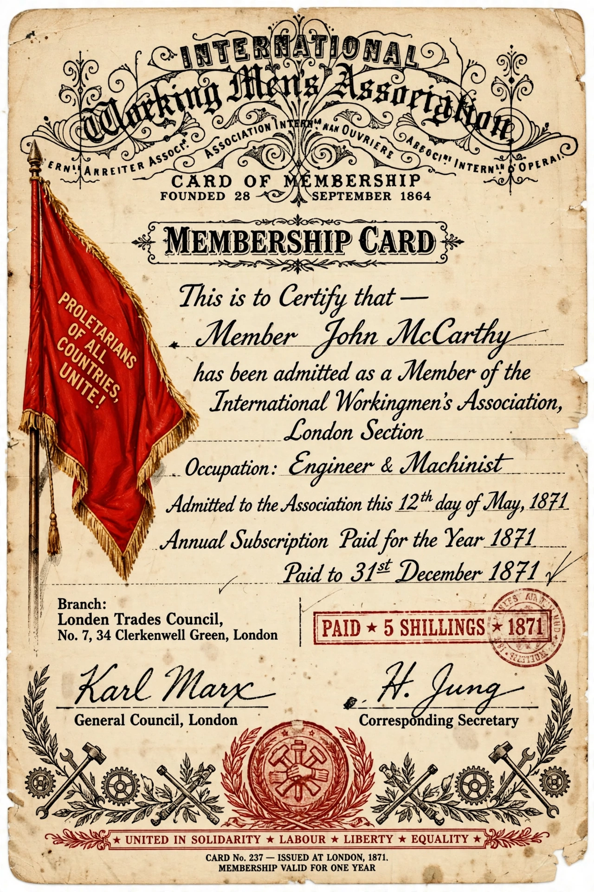

| International Workingmen's Association | |
 | |
| Founded | 28 September 1864, London |
|---|---|
| Dissolved | 1876 |
| Type | International organisation of workers |
| Key figures | Karl Marx, Mikhail Bakunin |
| Also known as | First International |
The International Workingmen's Association (IWA), often called the First International, was an international organisation founded in London in 1864 that aimed to unite working-class and socialist, communist and anarchist groups and trade unions across national borders.
The IWA was founded at a meeting at St Martin's Hall, London, on 28 September 1864. Karl Marx, resident in London, joined its General Council and drafted its Inaugural Address and Provisional Rules, which proclaimed that "the emancipation of the working classes must be conquered by the working classes themselves". The association supported strikes and campaigns such as the eight-hour day, and organised congresses at Geneva, Lausanne, Brussels, Basel and The Hague.
The defeat of the Paris Commune of 1871, which the International was widely (if inaccurately) blamed for inspiring, intensified its internal conflict between Marx's supporters and the anarchists led by Mikhail Bakunin. At the Hague Congress of 1872 Bakunin and his ally James Guillaume were expelled, and the General Council was transferred to New York, where the organisation faded and was formally dissolved in 1876. Bakunin's followers formed the rival anti-authoritarian International at St. Imier.
The IWA established the model of organised international labour solidarity later followed by the Second International (1889) and subsequent internationals.